Partie 7 - Steel Ball Run
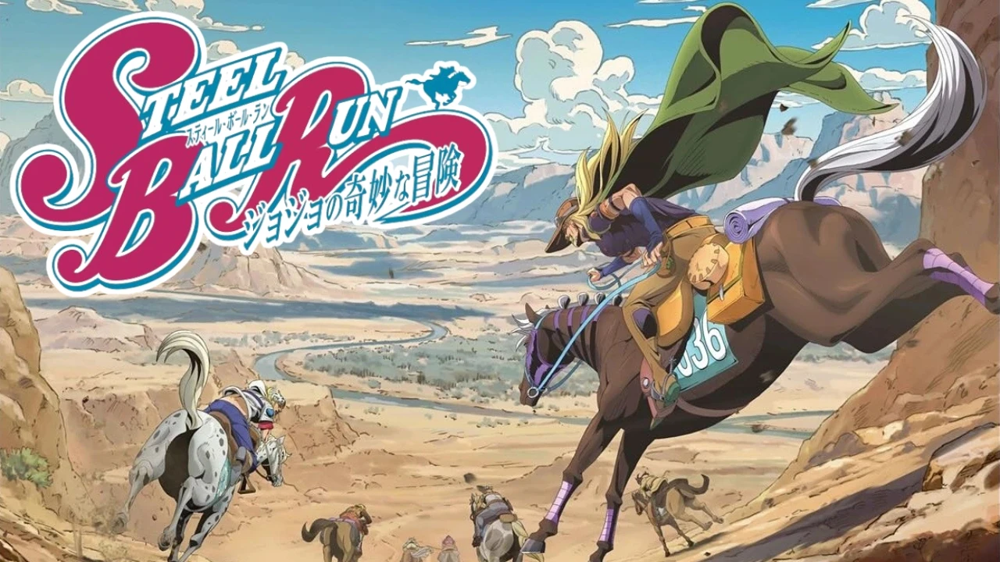
Explication de la partie
Cette partie se passe en 1890, au Etats-Unis dans un univers alternatif à celui des parties 1 à 6 à cause du reset de l'univers par Pucci dans la partie 6.
On suit donc Johnny Joestar a travers une course de cheval qui traverse les Etats-Unis de San Diego jusqu'a New York, avec 50 millions de dollars a la clé.
Cette partie n'est pas encore animée mais elle est annoncée pour le 19 mars 2026.
Protagoniste - Johnny Joestar
Johnny est le seul Jojo paraplégique et participe à la Steel Ball Run car elle représente pour lui une oportunité de recommencer sa carrière de Jockey après avoir perdu la reconaissance de son père.
Cette course se fait en plusieurs étapes et lors de la 2e, il passe dans une "Palme du Diable" dans laquelle son bras fusionne avec le bras gauche du corps du Saint et éveille son Stand, Tusk.
On apprend par la suite que cette course est organisée pour cacher la recherche et le rassemblement du Corps du Saint.
Johnny obtient Tusk Act 1 qui lui permet de faire tourner et tirer ses ongles comme des balles.
Tusk Act 2 lui permet de tirer les ongles avec plus de puissance grâce a la "Rotation" et les impacts peuvent se déplacer pour suivre la cible pendant un temps limité.
Avec Tusk Act 3, et en utilisant une Rotation parfaire (grâce au rectangle d'Or), Johnny peut se tirer dessus pour transferer des parties de sont corps dans un trou pour se déplacer ou tirer a distance.
Et pour finir, Tusk Act 4, qui est l'un des Stands les plus puissants de Jojo's bizarre adventure, peut briser des barrières dimensionnelles et infliger des dégats infini qui persistent indéfiniment.
Il obtient Tusk Act 4 en combinant la Rotation avec la force de son cheval. Johnny atteint donc la "Rotation d'Or Infinie".
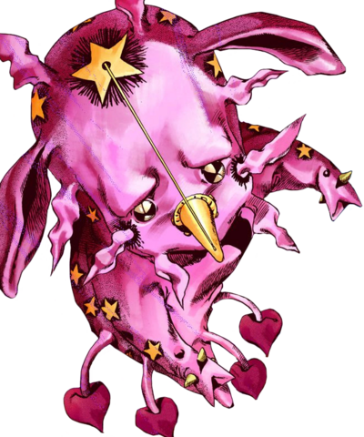
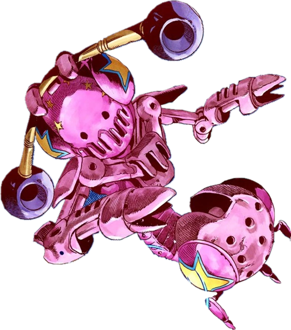
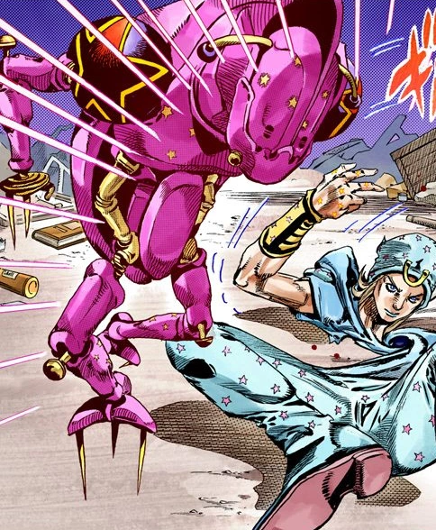
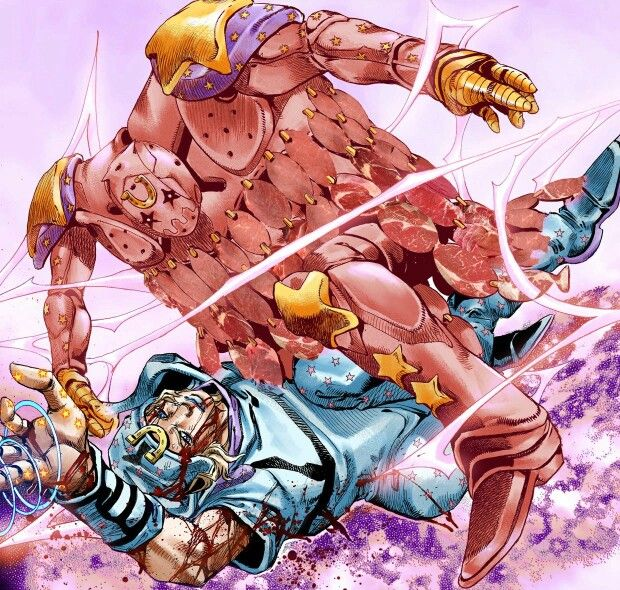
Antagoniste - Funny Valentine
Funny Valentine est le président des Etats-Unis et s'en prend a Johnny pour sécuriser les parties du Corps Saint, indispensables à sa vision d'une Amérique toute-puissante.
Il manie le Stand Dirty Deeds Done Dirt Cheap abrégé en D4C, lui permet de voyager entre des dimensions parallèles en se coinçant entre deux objets. Il peut amener des objets/personnes d'autres mondes, transférer sa conscience dans une autre version de lui-même pour survivre.
Funny Valentine réussit a faire évoluer D4C en D4C Love Train en unissant les parties du Cadavre du Saint qu'il a rassemblées tout au long de la course.
Une fois que qu'il atteint D4C love train, toute les attaque, blessure ou "malheur" dirigé contre Valentine est instantanément redirigé loin de lui vers une autre partie du monde sous la forme d'un événement malheureux pour quelqu'un d'autre.
En plus de ça, Valentine peut manipuler une faille dimensionnelle (le « mur de lumière ») créée par le Cadavre Saint. Il est presque impossible de l'atteindre tant qu'il est à l'intérieur.
Il se fait battre par Tusk Act 4, qui a réussi a traverser le mur de lumière.
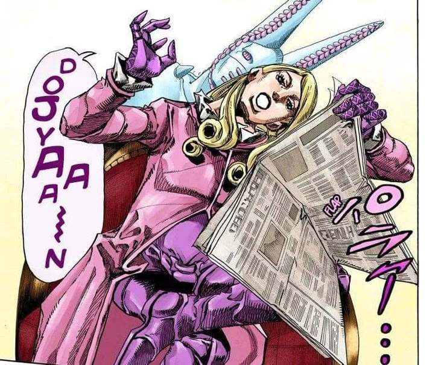
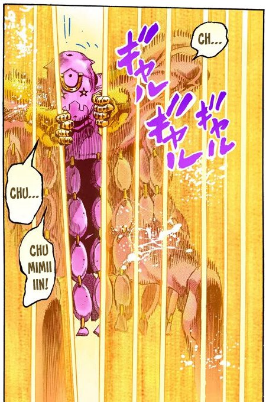
Alliés - Gyro Zeppeli, Lucy Steel
Gyro Zeppeli est le Jobro de Johnny et, il participe a la course car il cherche à sauver Marco, un enfant innocent condamné à mort, en utilisant le prix ou le prestige de la victoire pour obtenir sa grâce. Et il aide Johnny pour lui apprendre la Rotation.
Il utilise la Rotation, une technique de combat ancestrale basée sur le rectangle d'or, transmise par sa famille. Il manie des sphères d'acier et son Stand, Ball Breaker, matérialise cette énergie pour traverser les dimensions.
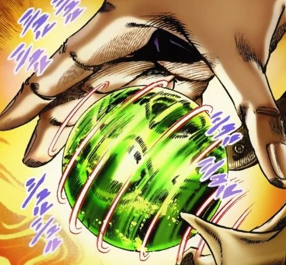
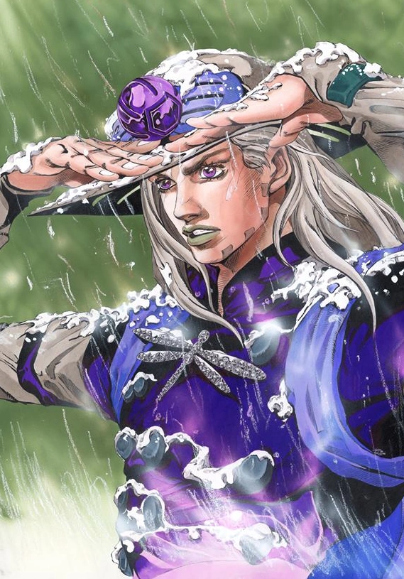
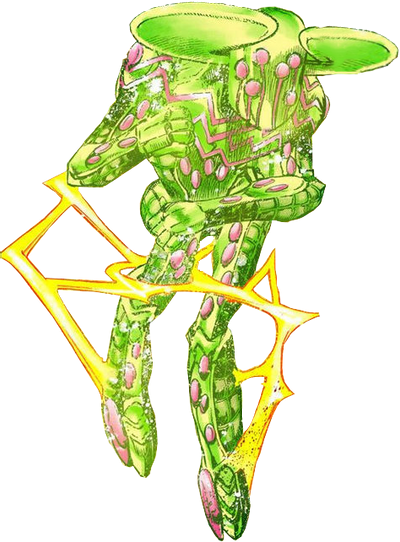
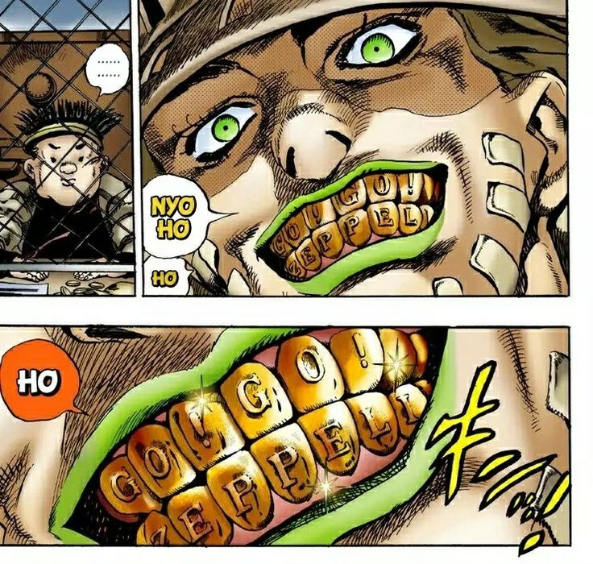
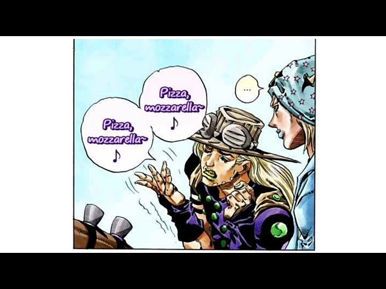
Ensuite parlons de Lucy Steel c'est une dolescente de 14 ans, l'épouse de Steven Steel, organisateur de la course. Courageuse et dévouée, elle s'allie au groupe Joestar contre Funny Valentine, devenant une très importante dans la quête pour le Corps du Saint.
Elle n'a pas de Stand, mais a la fin de la partie, elle obtient temporairement le Stand nommé Ticket to Ride après avoir fusionné avec le Corps du Saint.
Ce Stand passif, lié à son corps, lui permet de créer des larmes qui se transforment en lames tranchantes et de manipuler la chance pour assurer une protection divine.
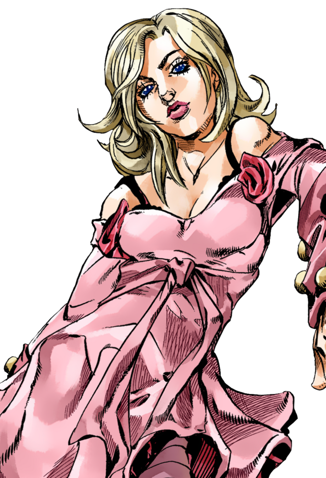
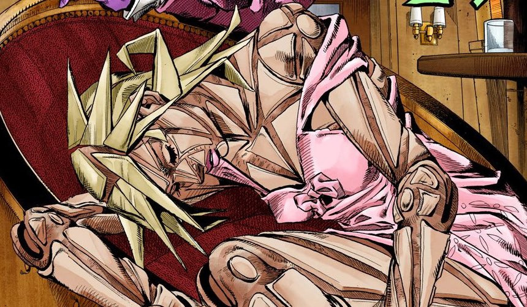